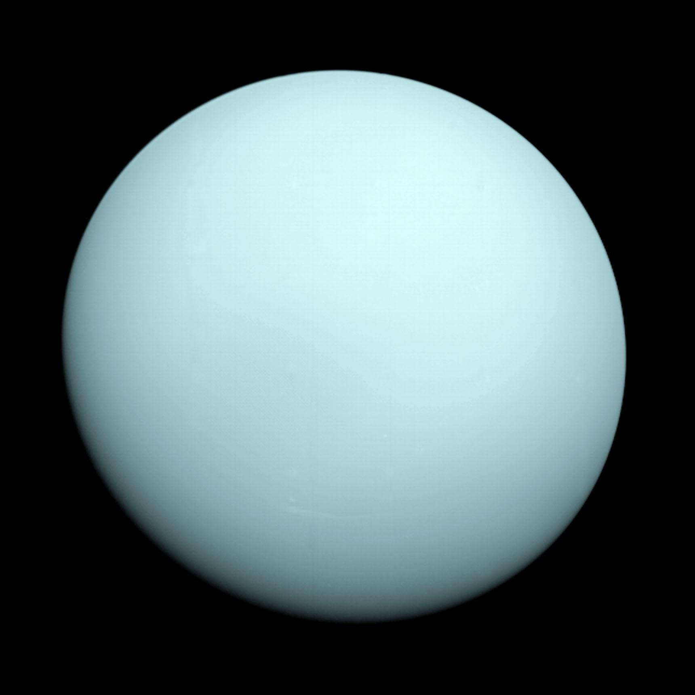
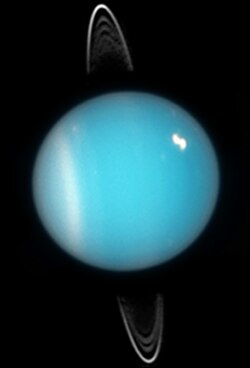

Facts about Uranus!
- Uranus is the seventh planet from the Sun.
- Uranus is known for its blue-green color, caused by methane in its atmosphere.
- It has a system of rings, though they are much fainter than Saturn's.
- Uranus has 27 known moons, with the largest being Titania and Oberon.
- Uranus was discovered by William Herschel in 1781, making it the first planet discovered with a telescope.
- Uranus has a very cold atmosphere, with average temperatures around -224°C (-371°F).
- Uranus is the only planet in the Solar System that rotates on its side, with its poles facing the Sun.
- Uranus has a very long year, with one orbit around the Sun taking about 84 Earth years.
